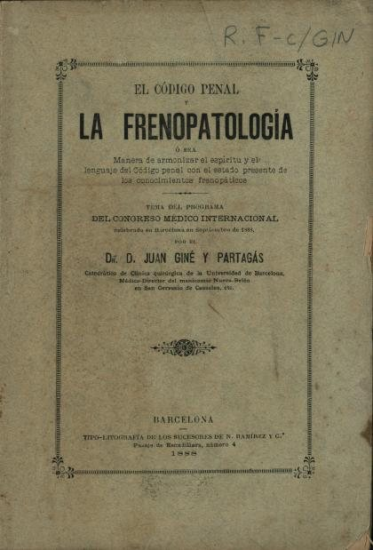

Libros de lenguaje, comunicación y cognición social
Libros de lenguaje, comunicación y cognición social en español: 30 libros completos para leer gratis aquí mismo y 4 fichas de títulos actuales.
Hablar, leer, jugar: promocionar el lenguaje desde el hogarRodríguez Martín, Inés; Jiménez-López, Laura; García Serrano, María
Hablar, leer, jugar: promocionar el lenguaje desde el hogarRodríguez Martín, Inés; Jiménez-López, Laura; García Serrano, MaríaJornada de Comunicación, Pragmática y Neurodiversidad. Evidencia informada para la atención psicoeducativa. Libro de textos completos de las comunicaciones orales.Andrés-Roqueta, Clara; Flores-Buils, Raquel; Abellán Roselló, Laura; García-Molina, Irene; Mercader Ruiz, Jessica; Siegenthaler Hierro, Rebeca; Clemente-Sánchez, María; Baixauli Fortea, Inmaculada
Jornada de Comunicación, Pragmática y Neurodiversidad. Evidencia informada para la atención psicoeducativa. Libro de textos completos de las comunicaciones orales.Andrés-Roqueta, Clara; Flores-Buils, Raquel; Abellán Roselló, Laura; García-Molina, Irene; Mercader Ruiz, Jessica; Siegenthaler Hierro, Rebeca; Clemente-Sánchez, María; Baixauli Fortea, InmaculadaComunicación no verbalSoria-Oliver, María; García Sánchez, Rubén; López, Jorge S.; Martín López, María Jesús; Martínez, José Manuel; Ratón Berlanga, Marta
Comunicación no verbalSoria-Oliver, María; García Sánchez, Rubén; López, Jorge S.; Martín López, María Jesús; Martínez, José Manuel; Ratón Berlanga, MartaEl valor de humanizar la palabra: lenguaje, ética y cuidados en contextos médico-sanitariosMuñoz-Miquel, Ana; Martínez-Carrasco, Robert
El valor de humanizar la palabra: lenguaje, ética y cuidados en contextos médico-sanitariosMuñoz-Miquel, Ana; Martínez-Carrasco, RobertEsto va de respeto: Guía de lenguaje anticapacitista para contextos educativosSánchez-Padilla, Raquel; Garcia-Molina, Irene
Esto va de respeto: Guía de lenguaje anticapacitista para contextos educativosSánchez-Padilla, Raquel; Garcia-Molina, IreneÁlbum ilustrado: desarrollo del lenguaje y educación literaria en la primera infanciaGala Pellicer, Susana
Álbum ilustrado: desarrollo del lenguaje y educación literaria en la primera infanciaGala Pellicer, SusanaEl desarrollo del lenguaje y la comunicación en la infanciaAparici, Melina; Igualada, Alfonso; Esteve-Gibert, Núria; Andrés-Roqueta, Clara; QUER, JOSEP; Sánchez Amat, Jordina
El desarrollo del lenguaje y la comunicación en la infanciaAparici, Melina; Igualada, Alfonso; Esteve-Gibert, Núria; Andrés-Roqueta, Clara; QUER, JOSEP; Sánchez Amat, JordinaLos signos del cuerpo : enfoques multimodales de la mente y el lenguajeScotto, Silvia Carolina; Rodríguez, Fernando Gabriel; Audisio, Irene
Los signos del cuerpo : enfoques multimodales de la mente y el lenguajeScotto, Silvia Carolina; Rodríguez, Fernando Gabriel; Audisio, IreneAprender a comunicar: cómo practicar la comprensión y la expresión en lengua españolaPalma Peña Jiménez
Aprender a comunicar: cómo practicar la comprensión y la expresión en lengua españolaPalma Peña JiménezLa comunicación no verbal en la relación médico-pacienteMolinuevo, Beatriz
La comunicación no verbal en la relación médico-pacienteMolinuevo, BeatrizManual práctico de patología del lenguaje. Evaluación e intervención en adultos y niñosLeiva Madueño, Isabel; Vázquez De Sebastián, Julia
Manual práctico de patología del lenguaje. Evaluación e intervención en adultos y niñosLeiva Madueño, Isabel; Vázquez De Sebastián, JuliaPsicolingüística II. Producción y percepción del lenguaje.Abumsara, Valeria
Psicolingüística II. Producción y percepción del lenguaje.Abumsara, ValeriaPsicolingüística I- Adquisición del lenguajeJaichenco, Virginia
Psicolingüística I- Adquisición del lenguajeJaichenco, VirginiaCognición social y lenguaje : la intersubjetividad en la evolución de la especie y en el desarrollo del niñoQuintanilla Pérez Wicht, Pablo; Mantilla Lagos, Carla; Cépeda, Paola
Cognición social y lenguaje : la intersubjetividad en la evolución de la especie y en el desarrollo del niñoQuintanilla Pérez Wicht, Pablo; Mantilla Lagos, Carla; Cépeda, PaolaEl vínculo de apego como escenario para el desarrollo de la cognición social tempranaMantilla Lagos, Carla
El vínculo de apego como escenario para el desarrollo de la cognición social tempranaMantilla Lagos, CarlaTDAH: Hablar con el cuerpoUbieto Pardo, José Ramón
TDAH: Hablar con el cuerpoUbieto Pardo, José RamónInteligencia y lenguaje : de Piaget a la psicolingüística actualGonzález Moreyra, Raúl
Inteligencia y lenguaje : de Piaget a la psicolingüística actualGonzález Moreyra, RaúlPsicopedagogía de la lengua oral : un enfoque comunicativoUniversitat de Barcelona. Institut de Ciències de l'Educació; Río, María José del
Psicopedagogía de la lengua oral : un enfoque comunicativoUniversitat de Barcelona. Institut de Ciències de l'Educació; Río, María José delEl Niño frente a la imagen fílmica con "ruptura" : (intento de aproximación semántico-pragmática al análisis de la comunicación)Marcé i Puig, Francesc; Pujagut, Lluís
El Niño frente a la imagen fílmica con "ruptura" : (intento de aproximación semántico-pragmática al análisis de la comunicación)Marcé i Puig, Francesc; Pujagut, LluísEl Codigo penal y la frenopatología ó sea Manera de armonizar el espíritu y el lenguaje del Código penal con el estado presente de los conocimientos frenopáticosGiné i Partagàs, Joan, 1836-1903
El Codigo penal y la frenopatología ó sea Manera de armonizar el espíritu y el lenguaje del Código penal con el estado presente de los conocimientos frenopáticosGiné i Partagàs, Joan, 1836-1903
Comprender : un abordaje filosófico de la relación entre mente y lenguajeAgüero, Gustavo Alfredo; Saharrea, Juan Manuel
Comprender : un abordaje filosófico de la relación entre mente y lenguajeAgüero, Gustavo Alfredo; Saharrea, Juan ManuelConceptos, lenguaje y cogniciónScotto, Silvia Carolina; Aguilera, Mariela; Danón, Laura; Glock, Hans-Johann; Bermúdez, José Luis; Kalpokas, Daniel Enrique; Camp, Elisabeth; Castellano, Federico; Beck, Jacob
Conceptos, lenguaje y cogniciónScotto, Silvia Carolina; Aguilera, Mariela; Danón, Laura; Glock, Hans-Johann; Bermúdez, José Luis; Kalpokas, Daniel Enrique; Camp, Elisabeth; Castellano, Federico; Beck, JacobLa inteligencia maquiavélica o social, la teoría de la mente y los procesos de formación universitariaMora Umaña, Andrea Melissa; Piedra García, Luis Ángel
La inteligencia maquiavélica o social, la teoría de la mente y los procesos de formación universitariaMora Umaña, Andrea Melissa; Piedra García, Luis ÁngelEl trastorno específico del lenguaje: diagnóstico e intervenciónAguado, Gerardo; Andreu, Llorenç; Cardona i Pera, M. Claustre; Sanz-Torrent, Mònica
El trastorno específico del lenguaje: diagnóstico e intervenciónAguado, Gerardo; Andreu, Llorenç; Cardona i Pera, M. Claustre; Sanz-Torrent, MònicaPsicopedagogía de la lengua oral y de la lengua escrita, septiembre 2014Gràcia Garcia, Marta; Solé Gallart, Isabel
Psicopedagogía de la lengua oral y de la lengua escrita, septiembre 2014Gràcia Garcia, Marta; Solé Gallart, IsabelTrastornos del lenguaje y la memoria, septiembre 2014BARROSO RIBAL, JOSE DOMINGO; Brun-Gasca, Carme; Dorado Mesa, Montserrat; García Jiménez, Arantxa; Martín Plasencia, Pilar; Nieto Barco, Antonieta
Trastornos del lenguaje y la memoria, septiembre 2014BARROSO RIBAL, JOSE DOMINGO; Brun-Gasca, Carme; Dorado Mesa, Montserrat; García Jiménez, Arantxa; Martín Plasencia, Pilar; Nieto Barco, Antonieta¿Por qué se habla tanto del TDAH? Conocer ayuda a comprenderMoreno García, Inmaculada
¿Por qué se habla tanto del TDAH? Conocer ayuda a comprenderMoreno García, InmaculadaLa comunicación no verbalTeresa Pont
La comunicación no verbalTeresa PontLengua y comunicación intergrupalViladot, Ma.Àngels
Lengua y comunicación intergrupalViladot, Ma.ÀngelsLa Atención Educativa a Personas con Alteraciones del Lenguaje o Deficiencia Mental. Una Perspectiva PsicopedagógicaGallardo Vázquez, Pedro; Ruiz Curado, Sofía
La Atención Educativa a Personas con Alteraciones del Lenguaje o Deficiencia Mental. Una Perspectiva PsicopedagógicaGallardo Vázquez, Pedro; Ruiz Curado, SofíaChácharaEthan Kross
ChácharaEthan KrossInteligencia socialDaniel Goleman
Inteligencia socialDaniel GolemanEl instinto del lenguajeSteven Pinker
El instinto del lenguajeSteven PinkerComunicación no violentaMarshall B. Rosenberg
Comunicación no violentaMarshall B. RosenbergTemas relacionados
¿Estás eligiendo carrera?
Haz gratis el test de orientación vocacional de AURZANE: intereses, aptitudes, autoconcepto y hábitos de estudio, con informe completo.